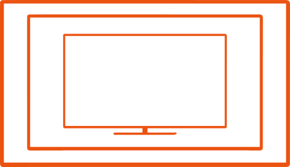
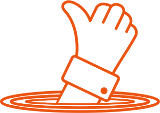

Revolution in watching experience
(Цукерберг позвонит, siliconrus.com, 24.05.2014)
Революция
Мы создали уникальное в своем роде устройство, которое навсегда изменит наше восприятие плоских экранов. «Выпрямитель Глаз» позволяет достичь невероятного погружения в картинку. В паре с магнитными контактными линзами мы изменяем форму глаза, адаптируя его под форму экрана. «Выпрямленные» глаза позволяют нам по-новому взглянуть на привычный плоский экран телевизора, просмотр которого превращается в настоящее зрелище!
Увеличение экрана
Экран телевизора становится значительно больше. Естественно, меняется всего лишь наше визуальное восприятие картинки. Мозг иначе трактует информацию, поступающую через плоские глаза. У него создается впечатление, что картинка намного ближе, чем есть на самом деле. За счет этого и создается эффект «увеличения экрана». Результат всегда индивидуален и зависит от множества факторов. Первая волна тестирования показала, что картинка может увеличиться на 15-35%.

Эффект присутствия
За счет увеличения картинки и расширения зоны фокусировки глаз мы добились полного погружения в происходящее на экране. Просмотр кино превратится в настоящее путешествие по новым мирам. Благодаря нашему устройству изображение окружает вас со всех сторон, а события разворачиваются прямо у вас на глазах.

Универсальность
Действие «Выпрямителя Глаз» распространяется абсолютно на любую плоскую поверхность – будь то экран телевизора или смартфона.
Безвредность
Несмотря на всю свою неестественность, действие «Выпрямителя Глаз» абсолютно безвредное. Специальные магнитные линзы постепенно изменяют форму глаза, приводя ее в плоское состояние. По ощущениям вы не отличите их от обычных контактных линз.